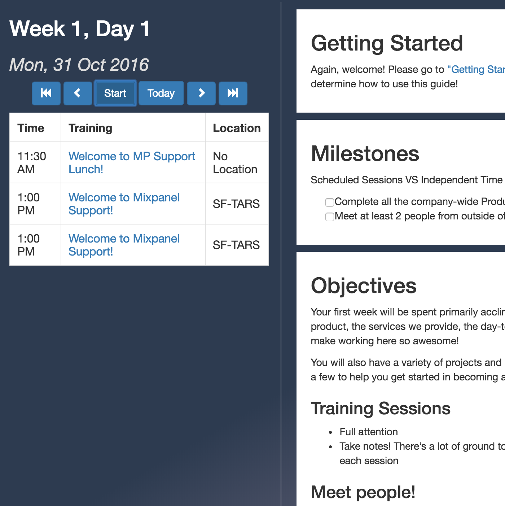

Tiffany Qi
writing
photography
engineering
experience
My Projects
Table for Two, Apr '17 - Nov '17

Mixpanel Onboarding, Nov '16 - Dec '16
Calendar Analytics, Jun '16 - Dec '16
Debate Society of Berkeley, Feb '16 - Apr '16
CSM Scheduler, Aug'15-Jan'16
Karate Kit, Dec 2015
calenTools, Nov 2015
CollegeStay, Nov 2015
YourFault, Oct 2015
Convene, Oct 2015
Computer Science Mentors Website, Jan 2015
Marketing Community at Berkeley Website, Jan 2015
Perfect Fifth Website, Dec 2014